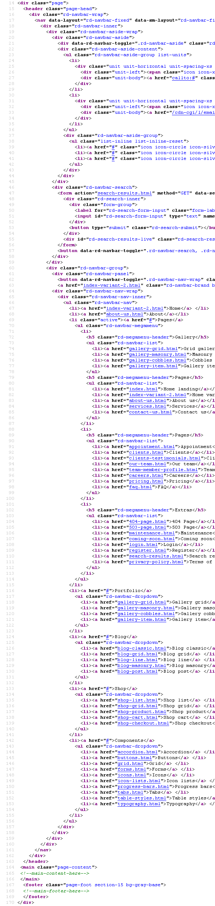

Created: 16/07/2017
By: templateforess
Email: ducna0602@gmail.com
Thank you for purchasing my theme. If you have any questions that are beyond the scope of this help file, please feel free to email via my user page contact form here. Thanks so much!
This theme is a responsive layout with 12 columns bootstrap. All of the information within the main content area is nested within a div with an class of "page". The general template structure is the same throughout the template. Here is the general structure.
If you would like to edit the color, font, or style of any elements in one of these columns, you would do the following:
.page a {
color: #someColor;
}
If you find that your new style is not overriding, it is most likely because of a specificity problem. Scroll down in your CSS file and make sure that there isn't a similar style that has more weight.
I.E.
.wide page a {
color: #someColor;
}
So, to ensure that your new styles are applied, make sure that they carry enough "weight" and that there isn't a style lower in the CSS file that is being applied after yours.
I'm using two CSS files in this theme. The first one is a generic reset file. Many browser interpret the default behavior of html elements differently. By using a general reset CSS file, we can work round this. This file also contains some general styling, such as anchor tag colors, font-sizes, etc. Keep in mind, that these values might be overridden somewhere else in the file.
The second file contains all of the specific stylings for the page. The file is separated into sections using:
/** * Template Style * * [Table of contents] * 1 Bootstrap Framework * 1.1 Normalize * 1.2 Glyphicons * 1.3 Scaffolding * 1.4 Type * 1.5 Code * 1.6 Tables * 1.7 Forms * 1.8 Buttons * 1.9 Grids * 1.10 Component animations * 1.11 Dropdowns * 1.12 Button Groups * 1.13 Input Groups * 1.14 Navs * 1.15 Navbar * 1.16 Breadcrumbs * 1.17 Pagination * 1.18 Pager * 1.19 Labels * 1.20 Badges * 1.21 Jumbotron * 1.22 Thumbnails * 1.23 Alerts * 1.24 Progress bars * 1.25 Media * 1.26 List Group * 1.27 Panels * 1.28 Responsive Embed * 1.29 Wells * 1.30 Close * 1.31 Modals * 1.32 Tooltip * 1.33 Popovers * 1.34 Carousel * 1.35 Utilities * 1.36 Responsive Utilities * * 2 Bootstrap Toolkit Styles * 2.1 Reset * 2.2 Flex Grid System * 2.3 Responsive Text System * 2.4 Responsive Pulls System * 2.5 Responsive Visibility System * 2.6 Bootstrap Grid Addons * 2.7 Dividers * 2.8 Type Addons * 2.9 Buttons Addons * 2.10 Buttons Effects * 2.11 Dropdowns Addons * 2.12 Sections * 2.13 Font Awesome * 2.14 Flaticon * 2.15 Material Design Icons * 2.16 Thumbnail Addons * 2.17 Wells Addons * 2.18 Scaffolding Addons * 2.19 Text Alignment System * 2.20 Text Styling System * 2.21 Navs Addons * 2.22 Navbar Addons * 2.23 Panels Addons * 2.24 Icons * 2.25 Progress Bars Addons * 2.26 Media Addons * 2.27 List Groups Addons * 2.28 Breadcrumbs Addons * 2.29 Input Groups Addons * 2.30 Dropcaps * 2.31 Alerts Addons * 2.32 Animations Addons * 2.33 Groups * 2.34 Comment Boxes * 2.35 Quotes * 2.36 Pagination Addons * 2.37 Pager Addons * 2.38 Labels Addons * 2.39 Posts * 2.40 Form Addons * 2.41 Offsets * 2.42 Responsive Units * 2.43 Icon Boxes * 2.44 Floating Groups * 2.45 Pricing and Plans * 2.46 Tables Addons * 2.47 Stacktables * 2.48 Text Rotators * 2.49 Jumbotron Addons * 2.50 Shop Toolbar * 2.51 Shop Product * 2.52 Badges Addons * 2.53 Member Boxes * 2.54 Context Styling * 2.55 Page Loaders * 2.56 Testimonials * * 3 Plugins * 3.1 RD Navbar * 3.2 RD Twitterfeed * 3.3 RD Instafeed * 3.4 RD Search * 3.5 RD Video * 3.6 RD Parallax * 3.7 RD Flickrfeed * 3.8 Swiper Slider * 3.9 Animate * 3.10 Scroll To * 3.11 Counter * 3.12 Owl Carousel * 3.13 Isotope * 3.14 Photoswipe * 3.15 Responsive Tabs * 3.16 RD Google Maps * 3.17 Select 2 * 3.18 FS Stepper * 3.19 Countdown * 3.20 RD Audio Player * 3.21 RD Video Player * 3.22 RD Event Calendar * 3.23 RD Facebook Feed * 3.24 Soundcloud Player * 3.25 Material Datetime Picker * 3.26 ToTop Button */ etc, etc.
If you would like to edit a specific section of the site, simply find the appropriate label in the CSS file, and then scroll down until you find the appropriate style that needs to be edited.
Any images that are placed within the blog section have 5px worth of padding and a light bluish background. If you would like to edit the display of these images, find the following section in the style sheet:
.page img {
change styles here:
}
This theme imports three Javascript files.
/** * jQuery Migrate * @see https://github.com/jquery/jquery-migrate * @license MIT License */ /** * jQuery Cookie Plugin * @see https://github.com/carhartl/jquery-cookie * @license MIT license */ /** * Device.js * @see https://github.com/matthewhudson/device.js * @license MIT License */ /** * jQuery resize event * @see http://benalman.com/projects/jquery-resize-plugin/ * @license MIT license */ /** * jQuery easing * @see http://gsgd.co.uk/sandbox/jquery/easing/ * @license BSD License */ /** * TouchSwipe * @see https://github.com/mattbryson/TouchSwipe-Jquery-Plugin * @license MIT License */ /** * Regula: An annotation-based form-validation framework in Javascript * @version 1.3.4 * @license BSD License * @copyright Robert Nyman, http://www.robertnyman.com */ /** * @module jQuery Form Plugin * @version 3.51 * @author M. Alsup * @see http://malsup.com/jquery/form/ * @license MIT and GPL licenses */ etc, etc.
plugins = {
pointerEvents: isIE < 11 ? "js/pointer-events.min.js" : false,
smoothScroll: $html.hasClass("use--smoothscroll") ? "js/smoothscroll.min.js" : false,
bootstrapTooltip: $("[data-toggle='tooltip']"),
bootstrapTabs: $(".tabs"),
rdParallax: $(".rd-parallax"),
rdAudioPlayer: $(".rd-audio"),
rdVideoPlayer: $(".rd-video-player"),
responsiveTabs: $(".responsive-tabs"),
rdGoogleMaps: $(".rd-google-map"),
rdNavbar: $(".rd-navbar"),
rdVideoBG: $(".rd-video"),
rdRange: $('.rd-range'),
textRotator: $(".text-rotator"),
owl: $(".owl-carousel"),
swiper: $(".swiper-slider"),
counter: $(".counter"),
flickrfeed: $(".flickr"),
twitterfeed: $(".twitter"),
progressBar: $(".progress-bar-js"),
isotope: $(".isotope"),
countDown: $(".countdown"),
calendar: $(".rd-calendar"),
facebookfeed: $(".facebook"),
instafeed: $(".instafeed"),
facebookWidget: $('#fb-root'),
materialTabs: $('.rd-material-tabs'),
filePicker: $('.rd-file-picker'),
fileDrop: $('.rd-file-drop'),
popover: $('[data-toggle="popover"]'),
dateCountdown: $('.DateCountdown'),
statefulButton: $('.btn-stateful'),
slick: $('.slick-slider'),
scroller: $(".scroll-wrap"),
socialite: $(".socialite"),
viewAnimate: $('.view-animate'),
selectFilter: $("select"),
rdInputLabel: $(".form-label"),
stacktable: $("[data-responsive=true]"),
bootstrapDateTimePicker: $("[data-time-picker]"),
customWaypoints: $('[data-custom-scroll-to]'),
photoSwipeGallery: $("[data-photo-swipe-item]"),
circleProgress: $(".progress-bar-circle"),
stepper: $("input[type='number']"),
radio: $("input[type='radio']"),
checkbox: $("input[type='checkbox']"),
customToggle: $("[data-custom-toggle]"),
rdMailForm: $(".rd-mailform"),
regula: $("[data-constraints]"),
search: $(".rd-search"),
searchResults: $('.rd-search-results'),
imgZoom: $('[mag-thumb]')
},
I've used the following images, icons or other files as listed.
**Demo images** 1. Unsplash by Crew - http://unsplash.com/ 2. Gratisography by Ryan McGuire - http://www.gratisography.com/ 3. Raumrot by Markus Spiske - http://raumrot.com/ 4. Jeshoots by Jan Vasek - http://jeshoots.com/ **Fonts** 1. Font Awesome by Dave Gandy - http://fortawesome.github.io/Font-Awesome/ 2. GLYPHICONS - http://glyphicons.com/ 3. MaterialDesign - https://materialdesignicons.com/ 4. Google Fonts - http://www.google.com/fonts
Once again, thank you so much for purchasing this theme. As I said at the beginning, I'd be glad to help you if you have any questions relating to this theme. No guarantees, but I'll do my best to assist. If you have a more general question relating to the themes on ThemeForest, you might consider visiting the forums and asking your question in the "Item Discussion" section.
philipjack